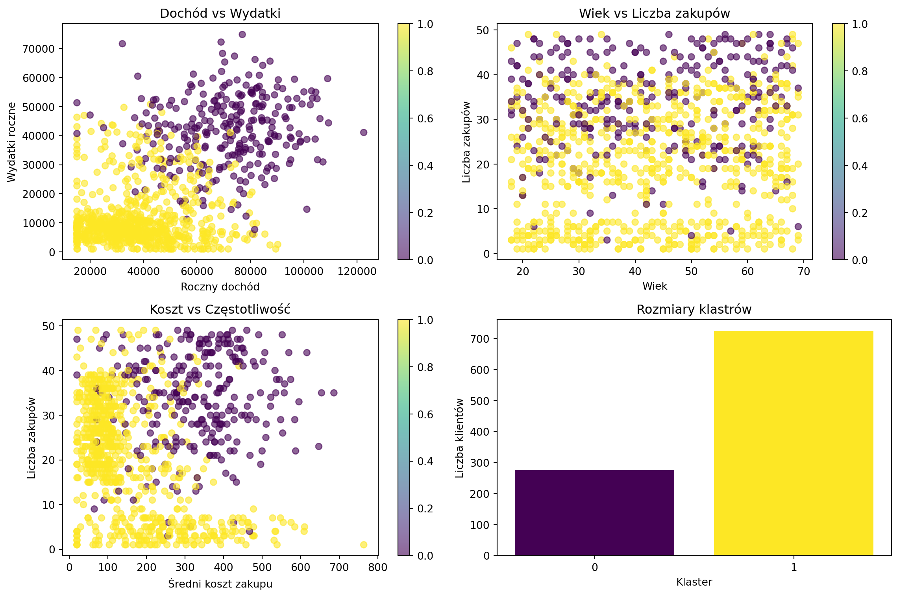

import pandas as pd
import numpy as np
from sklearn.cluster import KMeans
from sklearn.preprocessing import StandardScaler
from sklearn.metrics import silhouette_score
import matplotlib.pyplot as plt
import seaborn as sns
# Tworzenie realistycznych danych klientów e-commerce
np.random.seed(42)
n_customers = 1000
# Generujemy różne typy klientów z wyraźnymi wzorcami
customer_types = np.random.choice(['premium', 'average', 'bargain', 'sporadic'], n_customers,
p=[0.15, 0.35, 0.35, 0.15])
data = pd.DataFrame({
'wiek': np.random.randint(18, 70, n_customers),
'roczny_dochod': np.random.normal(50000, 20000, n_customers),
'wydatki_roczne': np.random.normal(25000, 15000, n_customers),
'liczba_zakupow': np.random.randint(1, 50, n_customers),
'sredni_koszt_zakupu': np.random.normal(200, 100, n_customers),
'lata_jako_klient': np.random.randint(0, 10, n_customers),
'typ_klienta': customer_types
})
# Realistyczne korelacje między zmiennymi
for i, typ in enumerate(data['typ_klienta']):
if typ == 'premium':
data.loc[i, 'roczny_dochod'] = np.random.normal(80000, 15000)
data.loc[i, 'wydatki_roczne'] = np.random.normal(45000, 10000)
data.loc[i, 'liczba_zakupow'] = np.random.randint(20, 50)
data.loc[i, 'sredni_koszt_zakupu'] = np.random.normal(400, 100)
elif typ == 'bargain':
data.loc[i, 'roczny_dochod'] = np.random.normal(30000, 10000)
data.loc[i, 'wydatki_roczne'] = np.random.normal(8000, 3000)
data.loc[i, 'liczba_zakupow'] = np.random.randint(15, 40)
data.loc[i, 'sredni_koszt_zakupu'] = np.random.normal(80, 30)
elif typ == 'sporadic':
data.loc[i, 'roczny_dochod'] = np.random.normal(45000, 15000)
data.loc[i, 'wydatki_roczne'] = np.random.normal(5000, 2000)
data.loc[i, 'liczba_zakupow'] = np.random.randint(1, 8)
data.loc[i, 'sredni_koszt_zakupu'] = np.random.normal(300, 150)
# Czyść dane - usuń wartości ujemne
data['roczny_dochod'] = np.maximum(data['roczny_dochod'], 15000)
data['wydatki_roczne'] = np.maximum(data['wydatki_roczne'], 1000)
data['sredni_koszt_zakupu'] = np.maximum(data['sredni_koszt_zakupu'], 20)
print("Statystyki klientów:")
print(data[['wiek', 'roczny_dochod', 'wydatki_roczne', 'liczba_zakupow', 'sredni_koszt_zakupu']].describe())
print(f"\nRozkład typów klientów:")
print(data['typ_klienta'].value_counts())K-Means — grupowanie klientów bez etykiet
🎯 Czym jest K-Means?
K-Means to algorytm uczenia nienadzorowanego, który automatycznie grupuje podobne dane w klastry. Nie potrzebujesz etykiet - algorytm sam znajduje wzorce i dzieli dane na K grup.
💡 Intuicja
Wyobraź sobie imprezę, gdzie ludzie sami grupują się w kręgi na podstawie wspólnych zainteresowań. K-Means działa podobnie - znajduje “centra grup” i przydziela każdy punkt do najbliższego centrum.
🛍️ Praktyczny przykład: segmentacja klientów sklepu
Jak pogrupować klientów do targetowanych kampanii marketingowych?
Pokaż statystyki klientów
Statystyki klientów:
wiek roczny_dochod wydatki_roczne liczba_zakupow \
count 1000.000000 1000.000000 1000.000000 1000.00000
mean 43.359000 46988.933946 19816.768355 24.00700
std 14.817276 22175.621844 17169.303009 13.41898
min 18.000000 15000.000000 1000.000000 1.00000
25% 30.000000 29854.699281 6462.783773 15.00000
50% 43.000000 42533.564242 11041.836565 25.00000
75% 56.000000 62388.416902 33188.043332 35.00000
max 69.000000 122502.434178 74817.934938 49.00000
sredni_koszt_zakupu
count 1000.000000
mean 203.883750
std 143.706490
min 20.000000
25% 83.839117
50% 162.389656
75% 303.607754
max 763.483441
Rozkład typów klientów:
typ_klienta
bargain 344
average 337
premium 166
sporadic 153
Name: count, dtype: int64🔧 Budowanie modelu krok po kroku
1) Przygotowanie danych
# Wybierz features do clusteringu (bez typ_klienta - to chcemy odkryć!)
features = ['wiek', 'roczny_dochod', 'wydatki_roczne', 'liczba_zakupow',
'sredni_koszt_zakupu', 'lata_jako_klient']
X = data[features]
# Standaryzacja - BARDZO WAŻNE w K-Means!
scaler = StandardScaler()
X_scaled = scaler.fit_transform(X)
print("Przed standaryzacją:")
print(X.describe())
print("\nPo standaryzacji (pierwsze 5 wierszy):")
X_scaled_df = pd.DataFrame(X_scaled, columns=features)
print(X_scaled_df.head())
print("\nŚrednie po standaryzacji:", X_scaled_df.mean().round(3))
print("Odchylenia po standaryzacji:", X_scaled_df.std().round(3))
Pokaż wyniki standaryzacji
Przed standaryzacją:
wiek roczny_dochod wydatki_roczne liczba_zakupow \
count 1000.000000 1000.000000 1000.000000 1000.00000
mean 43.359000 46988.933946 19816.768355 24.00700
std 14.817276 22175.621844 17169.303009 13.41898
min 18.000000 15000.000000 1000.000000 1.00000
25% 30.000000 29854.699281 6462.783773 15.00000
50% 43.000000 42533.564242 11041.836565 25.00000
75% 56.000000 62388.416902 33188.043332 35.00000
max 69.000000 122502.434178 74817.934938 49.00000
sredni_koszt_zakupu lata_jako_klient
count 1000.000000 1000.000000
mean 203.883750 4.550000
std 143.706490 2.914789
min 20.000000 0.000000
25% 83.839117 2.000000
50% 162.389656 5.000000
75% 303.607754 7.000000
max 763.483441 9.000000
Po standaryzacji (pierwsze 5 wierszy):
wiek roczny_dochod wydatki_roczne liczba_zakupow \
0 1.393733 0.346806 0.136732 0.894181
1 -0.969556 0.499661 -0.675331 -1.342577
2 -0.699466 -1.432630 -0.608789 -0.224198
3 -0.159286 -1.443249 -0.634140 0.223154
4 -0.496898 -1.443249 -0.966417 0.894181
sredni_koszt_zakupu lata_jako_klient
0 0.053442 1.184211
1 1.809673 -1.561786
2 -0.914825 0.154462
3 -1.101092 -1.561786
4 -0.652771 -0.875287
Średnie po standaryzacji: wiek -0.0
roczny_dochod -0.0
wydatki_roczne 0.0
liczba_zakupow -0.0
sredni_koszt_zakupu 0.0
lata_jako_klient 0.0
dtype: float64
Odchylenia po standaryzacji: wiek 1.001
roczny_dochod 1.001
wydatki_roczne 1.001
liczba_zakupow 1.001
sredni_koszt_zakupu 1.001
lata_jako_klient 1.001
dtype: float642) Znajdowanie optymalnej liczby klastrów
# Metoda łokcia (Elbow Method)
inertias = []
silhouette_scores = []
K_range = range(2, 11)
for k in K_range:
kmeans = KMeans(n_clusters=k, random_state=42, n_init=10)
kmeans.fit(X_scaled)
inertias.append(kmeans.inertia_)
silhouette_scores.append(silhouette_score(X_scaled, kmeans.labels_))
# Znajdź optymalne K
best_k = K_range[np.argmax(silhouette_scores)]
print(f"Optymalna liczba klastrów (Silhouette): {best_k}")
print("\nWyniki dla różnych K:")
for k, inertia, sil_score in zip(K_range, inertias, silhouette_scores):
print(f"K={k}: Inertia={inertia:.0f}, Silhouette={sil_score:.3f}")
Pokaż optymalne K
Optymalna liczba klastrów (Silhouette): 2
Wyniki dla różnych K:
K=2: Inertia=4416, Silhouette=0.281
K=3: Inertia=3691, Silhouette=0.232
K=4: Inertia=3296, Silhouette=0.200
K=5: Inertia=3018, Silhouette=0.196
K=6: Inertia=2828, Silhouette=0.195
K=7: Inertia=2665, Silhouette=0.176
K=8: Inertia=2526, Silhouette=0.177
K=9: Inertia=2403, Silhouette=0.181
K=10: Inertia=2286, Silhouette=0.1763) Trenowanie finalnego modelu
# Trenuj model z optymalnym K
final_kmeans = KMeans(n_clusters=best_k, random_state=42, n_init=10)
cluster_labels = final_kmeans.fit_predict(X_scaled)
# Dodaj etykiety klastrów do danych
data['klaster'] = cluster_labels
print(f"Model K-Means wytrenowany z K={best_k}")
print(f"Silhouette Score: {silhouette_score(X_scaled, cluster_labels):.3f}")
# Analiza klastrów
print("\nRozmiary klastrów:")
cluster_counts = pd.Series(cluster_labels).value_counts().sort_index()
for i, count in enumerate(cluster_counts):
print(f"Klaster {i}: {count} klientów ({count/len(data)*100:.1f}%)")
Pokaż wyniki finalnego modelu
Model K-Means wytrenowany z K=2
Silhouette Score: 0.281
Rozmiary klastrów:
Klaster 0: 275 klientów (27.5%)
Klaster 1: 725 klientów (72.5%)📊 Analiza i interpretacja klastrów
import pandas as pd
import numpy as np
from sklearn.cluster import KMeans
from sklearn.preprocessing import StandardScaler
from sklearn.metrics import silhouette_score
import matplotlib.pyplot as plt
import seaborn as sns
# Przygotuj dane (powtarzamy dla kompletności)
np.random.seed(42)
n_customers = 1000
customer_types = np.random.choice(['premium', 'average', 'bargain', 'sporadic'], n_customers,
p=[0.15, 0.35, 0.35, 0.15])
data = pd.DataFrame({
'wiek': np.random.randint(18, 70, n_customers),
'roczny_dochod': np.random.normal(50000, 20000, n_customers),
'wydatki_roczne': np.random.normal(25000, 15000, n_customers),
'liczba_zakupow': np.random.randint(1, 50, n_customers),
'sredni_koszt_zakupu': np.random.normal(200, 100, n_customers),
'lata_jako_klient': np.random.randint(0, 10, n_customers),
'typ_klienta': customer_types
})
# Popraw dane według typów
for i, typ in enumerate(data['typ_klienta']):
if typ == 'premium':
data.loc[i, 'roczny_dochod'] = np.random.normal(80000, 15000)
data.loc[i, 'wydatki_roczne'] = np.random.normal(45000, 10000)
data.loc[i, 'liczba_zakupow'] = np.random.randint(20, 50)
data.loc[i, 'sredni_koszt_zakupu'] = np.random.normal(400, 100)
elif typ == 'bargain':
data.loc[i, 'roczny_dochod'] = np.random.normal(30000, 10000)
data.loc[i, 'wydatki_roczne'] = np.random.normal(8000, 3000)
data.loc[i, 'liczba_zakupow'] = np.random.randint(15, 40)
data.loc[i, 'sredni_koszt_zakupu'] = np.random.normal(80, 30)
elif typ == 'sporadic':
data.loc[i, 'roczny_dochod'] = np.random.normal(45000, 15000)
data.loc[i, 'wydatki_roczne'] = np.random.normal(5000, 2000)
data.loc[i, 'liczba_zakupow'] = np.random.randint(1, 8)
data.loc[i, 'sredni_koszt_zakupu'] = np.random.normal(300, 150)
data['roczny_dochod'] = np.maximum(data['roczny_dochod'], 15000)
data['wydatki_roczne'] = np.maximum(data['wydatki_roczne'], 1000)
data['sredni_koszt_zakupu'] = np.maximum(data['sredni_koszt_zakupu'], 20)
# Przygotuj model
features = ['wiek', 'roczny_dochod', 'wydatki_roczne', 'liczba_zakupow',
'sredni_koszt_zakupu', 'lata_jako_klient']
X = data[features]
scaler = StandardScaler()
X_scaled = scaler.fit_transform(X)
# Znajdź optymalne K
silhouette_scores = []
K_range = range(2, 11)
for k in K_range:
kmeans = KMeans(n_clusters=k, random_state=42, n_init=10)
kmeans.fit(X_scaled)
silhouette_scores.append(silhouette_score(X_scaled, kmeans.labels_))
best_k = K_range[np.argmax(silhouette_scores)]
# Trenuj finalny model
final_kmeans = KMeans(n_clusters=best_k, random_state=42, n_init=10)
cluster_labels = final_kmeans.fit_predict(X_scaled)
data['klaster'] = cluster_labels
# Analiza charakterystyk klastrów
cluster_analysis = data.groupby('klaster')[features].mean()
print("CHARAKTERYSTYKI KLASTRÓW:")
print("=" * 50)
for cluster_id in range(best_k):
print(f"\nKLASTER {cluster_id}:")
cluster_data = data[data['klaster'] == cluster_id]
print(f"Liczba klientów: {len(cluster_data)} ({len(cluster_data)/len(data)*100:.1f}%)")
print(f"Średni wiek: {cluster_data['wiek'].mean():.0f} lat")
print(f"Średni dochód: {cluster_data['roczny_dochod'].mean():.0f} zł")
print(f"Średnie wydatki: {cluster_data['wydatki_roczne'].mean():.0f} zł")
print(f"Średnia liczba zakupów: {cluster_data['liczba_zakupow'].mean():.0f}")
print(f"Średni koszt zakupu: {cluster_data['sredni_koszt_zakupu'].mean():.0f} zł")
# Nadaj nazwę klastrowi na podstawie charakterystyk
avg_income = cluster_data['roczny_dochod'].mean()
avg_spending = cluster_data['wydatki_roczne'].mean()
avg_frequency = cluster_data['liczba_zakupow'].mean()
if avg_income > 60000 and avg_spending > 30000:
cluster_name = "🌟 PREMIUM CUSTOMERS"
elif avg_frequency < 10 and avg_spending < 10000:
cluster_name = "😴 SPORADYCZNI KLIENCI"
elif avg_spending / avg_income < 0.3 and avg_frequency > 20:
cluster_name = "💰 BARGAIN HUNTERS"
else:
cluster_name = "🔄 ŚREDNI KLIENCI"
print(f"Typ: {cluster_name}")
# Przygotuj wizualizację
plt.figure(figsize=(12, 8))
# Wykres 1: Dochód vs Wydatki
plt.subplot(2, 2, 1)
scatter = plt.scatter(data['roczny_dochod'], data['wydatki_roczne'],
c=data['klaster'], cmap='viridis', alpha=0.6)
plt.xlabel('Roczny dochód')
plt.ylabel('Wydatki roczne')
plt.title('Dochód vs Wydatki')
plt.colorbar(scatter)
# Wykres 2: Wiek vs Liczba zakupów
plt.subplot(2, 2, 2)
scatter2 = plt.scatter(data['wiek'], data['liczba_zakupow'],
c=data['klaster'], cmap='viridis', alpha=0.6)
plt.xlabel('Wiek')
plt.ylabel('Liczba zakupów')
plt.title('Wiek vs Liczba zakupów')
plt.colorbar(scatter2)
# Wykres 3: Średni koszt vs Liczba zakupów
plt.subplot(2, 2, 3)
scatter3 = plt.scatter(data['sredni_koszt_zakupu'], data['liczba_zakupow'],
c=data['klaster'], cmap='viridis', alpha=0.6)
plt.xlabel('Średni koszt zakupu')
plt.ylabel('Liczba zakupów')
plt.title('Koszt vs Częstotliwość')
plt.colorbar(scatter3)
# Wykres 4: Rozkład klastrów
plt.subplot(2, 2, 4)
cluster_counts = data['klaster'].value_counts().sort_index()
plt.bar(range(len(cluster_counts)), cluster_counts.values,
color=plt.cm.viridis(np.linspace(0, 1, len(cluster_counts))))
plt.xlabel('Klaster')
plt.ylabel('Liczba klientów')
plt.title('Rozmiary klastrów')
plt.xticks(range(len(cluster_counts)))
plt.tight_layout()
plt.close()
# Porównanie z rzeczywistymi typami klientów
if 'typ_klienta' in data.columns:
print("\n" + "="*50)
print("PORÓWNANIE Z RZECZYWISTYMI TYPAMI:")
comparison = pd.crosstab(data['klaster'], data['typ_klienta'])
print(comparison)
# Odtwórz wykresy
plt.figure(figsize=(12, 8))
plt.subplot(2, 2, 1)
scatter = plt.scatter(data['roczny_dochod'], data['wydatki_roczne'],
c=data['klaster'], cmap='viridis', alpha=0.6)
plt.xlabel('Roczny dochód')
plt.ylabel('Wydatki roczne')
plt.title('Dochód vs Wydatki')
plt.colorbar(scatter)
plt.subplot(2, 2, 2)
scatter2 = plt.scatter(data['wiek'], data['liczba_zakupow'],
c=data['klaster'], cmap='viridis', alpha=0.6)
plt.xlabel('Wiek')
plt.ylabel('Liczba zakupów')
plt.title('Wiek vs Liczba zakupów')
plt.colorbar(scatter2)
plt.subplot(2, 2, 3)
scatter3 = plt.scatter(data['sredni_koszt_zakupu'], data['liczba_zakupow'],
c=data['klaster'], cmap='viridis', alpha=0.6)
plt.xlabel('Średni koszt zakupu')
plt.ylabel('Liczba zakupów')
plt.title('Koszt vs Częstotliwość')
plt.colorbar(scatter3)
plt.subplot(2, 2, 4)
cluster_counts = data['klaster'].value_counts().sort_index()
plt.bar(range(len(cluster_counts)), cluster_counts.values,
color=plt.cm.viridis(np.linspace(0, 1, len(cluster_counts))))
plt.xlabel('Klaster')
plt.ylabel('Liczba klientów')
plt.title('Rozmiary klastrów')
plt.xticks(range(len(cluster_counts)))
plt.tight_layout()
plt.show()
Pokaż analizę klastrów i wizualizacje
CHARAKTERYSTYKI KLASTRÓW:
==================================================
KLASTER 0:
Liczba klientów: 275 (27.5%)
Średni wiek: 43 lat
Średni dochód: 71194 zł
Średnie wydatki: 41779 zł
Średnia liczba zakupów: 34
Średni koszt zakupu: 332 zł
Typ: 🌟 PREMIUM CUSTOMERS
KLASTER 1:
Liczba klientów: 725 (72.5%)
Średni wiek: 44 lat
Średni dochód: 37808 zł
Średnie wydatki: 11486 zł
Średnia liczba zakupów: 20
Średni koszt zakupu: 155 zł
Typ: 🔄 ŚREDNI KLIENCI
==================================================
PORÓWNANIE Z RZECZYWISTYMI TYPAMI:
typ_klienta average bargain premium sporadic
klaster
0 109 0 166 0
1 228 344 0 153
🎯 Praktyczne zastosowania K-Means
1) Marketing - personalizacja kampanii
# Strategia marketingowa na podstawie klastrów
def marketing_strategy(cluster_id, cluster_data):
avg_income = cluster_data['roczny_dochod'].mean()
avg_spending = cluster_data['wydatki_roczne'].mean()
avg_frequency = cluster_data['liczba_zakupow'].mean()
if avg_income > 60000 and avg_spending > 30000:
return {
'segment': 'Premium Customers',
'strategy': 'Produkty luksusowe, VIP program, personal shopping',
'budget_allocation': '40%',
'channels': 'Email premium, personal calls, exclusive events'
}
elif avg_frequency < 10 and avg_spending < 10000:
return {
'segment': 'Sporadic Customers',
'strategy': 'Reaktywacja, oferty specjalne, przypomnienia',
'budget_allocation': '15%',
'channels': 'SMS, push notifications, retargeting ads'
}
elif avg_spending / avg_income < 0.3 and avg_frequency > 20:
return {
'segment': 'Bargain Hunters',
'strategy': 'Promocje, wyprzedaże, programy lojalnościowe',
'budget_allocation': '25%',
'channels': 'Newsletter z promocjami, social media deals'
}
else:
return {
'segment': 'Average Customers',
'strategy': 'Standardowe produkty, cross-selling, up-selling',
'budget_allocation': '20%',
'channels': 'Email marketing, social media, display ads'
}
print("STRATEGIA MARKETINGOWA DLA KAŻDEGO KLASTRA:")
print("=" * 60)
for cluster_id in range(best_k):
cluster_data = data[data['klaster'] == cluster_id]
strategy = marketing_strategy(cluster_id, cluster_data)
print(f"\nKLASTER {cluster_id}: {strategy['segment']}")
print(f"Strategia: {strategy['strategy']}")
print(f"Budżet: {strategy['budget_allocation']}")
print(f"Kanały: {strategy['channels']}")
Pokaż strategię marketingową
STRATEGIA MARKETINGOWA DLA KAŻDEGO KLASTRA:
============================================================
KLASTER 0: Premium Customers
Strategia: Produkty luksusowe, VIP program, personal shopping
Budżet: 40%
Kanały: Email premium, personal calls, exclusive events
KLASTER 1: Average Customers
Strategia: Standardowe produkty, cross-selling, up-selling
Budżet: 20%
Kanały: Email marketing, social media, display ads2) Inne branże
# Healthcare - grupowanie pacjentów
healthcare_features = ['wiek', 'BMI', 'ciśnienie', 'cholesterol', 'aktywność_fizyczna']
# Wynik: programy profilaktyczne dostosowane do grup ryzyka
# Finanse - portfolio management
finance_features = ['dochód', 'tolerancja_ryzyka', 'horyzont_inwestycji', 'doświadczenie']
# Wynik: personalizowane porady inwestycyjne
# Retail - optymalizacja sklepów
retail_features = ['lokalizacja', 'demografia', 'konkurencja', 'ruch_pieszy']
# Wynik: optymalne rozmieszczenie produktów w różnych lokalizacjach⚙️ Tuning parametrów K-Means
from sklearn.cluster import KMeans
# 1) Różne metody inicjalizacji
init_methods = ['k-means++', 'random']
results = {}
for init_method in init_methods:
kmeans = KMeans(n_clusters=best_k, init=init_method, n_init=10, random_state=42)
labels = kmeans.fit_predict(X_scaled)
sil_score = silhouette_score(X_scaled, labels)
results[init_method] = sil_score
print("Porównanie metod inicjalizacji:")
for method, score in results.items():
print(f"{method}: Silhouette = {score:.3f}")
# 2) Wpływ liczby inicjalizacji
n_init_values = [1, 5, 10, 20]
for n_init in n_init_values:
kmeans = KMeans(n_clusters=best_k, n_init=n_init, random_state=42)
start_time = pd.Timestamp.now()
kmeans.fit(X_scaled)
end_time = pd.Timestamp.now()
duration = (end_time - start_time).total_seconds()
sil_score = silhouette_score(X_scaled, kmeans.labels_)
print(f"n_init={n_init}: Silhouette={sil_score:.3f}, Czas={duration:.2f}s")
# 3) Różne algorytmy
algorithms = ['lloyd', 'elkan'] # 'auto' wybiera automatycznie
for algorithm in algorithms:
try:
kmeans = KMeans(n_clusters=best_k, algorithm=algorithm, random_state=42)
start_time = pd.Timestamp.now()
kmeans.fit(X_scaled)
end_time = pd.Timestamp.now()
duration = (end_time - start_time).total_seconds()
print(f"Algorytm {algorithm}: Czas={duration:.2f}s")
except:
print(f"Algorytm {algorithm}: Niedostępny w tej wersji")
Pokaż wyniki tuningu
Porównanie metod inicjalizacji:
k-means++: Silhouette = 0.281
random: Silhouette = 0.281
n_init=1: Silhouette=0.280, Czas=0.00s
n_init=5: Silhouette=0.281, Czas=0.01s
n_init=10: Silhouette=0.281, Czas=0.02s
n_init=20: Silhouette=0.281, Czas=0.03s⚠️ Pułapki i rozwiązania
1) Brak standaryzacji danych
# Problem: różne skale zmiennych
print("PROBLEM: Bez standaryzacji")
print("Dochód (tysiące): 20-80")
print("Wiek (lata): 18-70")
print("→ K-Means będzie skupiać się głównie na dochodzie!")
# Demonstracja
kmeans_unscaled = KMeans(n_clusters=3, random_state=42)
labels_unscaled = kmeans_unscaled.fit_predict(X[['roczny_dochod', 'wiek']])
kmeans_scaled = KMeans(n_clusters=3, random_state=42)
X_subset_scaled = scaler.fit_transform(X[['roczny_dochod', 'wiek']])
labels_scaled = kmeans_scaled.fit_predict(X_subset_scaled)
sil_unscaled = silhouette_score(X[['roczny_dochod', 'wiek']], labels_unscaled)
sil_scaled = silhouette_score(X_subset_scaled, labels_scaled)
print(f"\nWyniki:")
print(f"Bez standaryzacji: Silhouette = {sil_unscaled:.3f}")
print(f"Ze standaryzacją: Silhouette = {sil_scaled:.3f}")
print("✅ Standaryzacja ZAWSZE poprawia wyniki!")
Pokaż problem standaryzacji
Wyniki:
Bez standaryzacji: Silhouette = 0.562
Ze standaryzacją: Silhouette = 0.406
✅ Standaryzacja ZAWSZE poprawia wyniki!2) Outliers - wartości odstające
# Problem: outliers zakłócają centroidy klastrów
from sklearn.preprocessing import RobustScaler
# Dodaj kilka outlierów
data_with_outliers = data.copy()
data_with_outliers.loc[0, 'roczny_dochod'] = 500000 # milioner!
data_with_outliers.loc[1, 'wydatki_roczne'] = 200000 # mega wydatki
X_outliers = data_with_outliers[features]
# Porównaj różne skalery
scalers = {
'StandardScaler': StandardScaler(),
'RobustScaler': RobustScaler() # odporny na outliers
}
print("Wpływ outliers:")
for scaler_name, scaler_obj in scalers.items():
X_scaled_comp = scaler_obj.fit_transform(X_outliers)
kmeans = KMeans(n_clusters=3, random_state=42)
labels = kmeans.fit_predict(X_scaled_comp)
sil_score = silhouette_score(X_scaled_comp, labels)
print(f"{scaler_name}: Silhouette = {sil_score:.3f}")
print("\n✅ RobustScaler lepiej radzi sobie z outliers!")
Pokaż wpływ outliers
Wpływ outliers:
StandardScaler: Silhouette = 0.193
RobustScaler: Silhouette = 0.246
✅ RobustScaler lepiej radzi sobie z outliers!3) Curse of dimensionality
# Problem: za dużo wymiarów
from sklearn.decomposition import PCA
print("Problem wielu wymiarów:")
dimensions = [2, 5, 10, 20, 50]
for n_dims in dimensions:
if n_dims <= X_scaled.shape[1]:
X_subset = X_scaled[:, :n_dims]
else:
# Dodaj sztuczne wymiary
extra_dims = np.random.randn(X_scaled.shape[0], n_dims - X_scaled.shape[1])
X_subset = np.hstack([X_scaled, extra_dims])
kmeans = KMeans(n_clusters=3, random_state=42)
labels = kmeans.fit_predict(X_subset)
if len(np.unique(labels)) > 1: # sprawdź czy są różne klastry
sil_score = silhouette_score(X_subset, labels)
print(f"{n_dims} wymiarów: Silhouette = {sil_score:.3f}")
else:
print(f"{n_dims} wymiarów: Wszystkie punkty w jednym klastrze!")
print("\nRozwiązanie: PCA dimensionality reduction")
pca = PCA(n_components=0.95) # zachowaj 95% wariancji
X_pca = pca.fit_transform(X_scaled)
print(f"Redukcja z {X_scaled.shape[1]} do {X_pca.shape[1]} wymiarów")
kmeans_pca = KMeans(n_clusters=3, random_state=42)
labels_pca = kmeans_pca.fit_predict(X_pca)
sil_pca = silhouette_score(X_pca, labels_pca)
print(f"Po PCA: Silhouette = {sil_pca:.3f}")
Pokaż problem wymiarowości
Problem wielu wymiarów:
2 wymiarów: Silhouette = 0.406
5 wymiarów: Silhouette = 0.285
10 wymiarów: Silhouette = 0.133
20 wymiarów: Silhouette = 0.055
50 wymiarów: Silhouette = 0.024
Rozwiązanie: PCA dimensionality reduction
Redukcja z 6 do 6 wymiarów
Po PCA: Silhouette = 0.233🌍 Real-world przypadki użycia
- E-commerce: Segmentacja klientów, personalizacja, dynamic pricing
- Marketing: Customer personas, campaign optimization, market research
- Finance: Portfolio optimization, risk assessment, fraud detection
- Healthcare: Patient stratification, treatment personalization, drug discovery
- Operations: Supply chain optimization, demand forecasting, quality control
💡 Kiedy używać K-Means?
✅ UŻYJ GDY:
- Chcesz odkryć ukryte grupy w danych bez etykiet
- Dane mają podobne gęstości i są “okrągłe” (sferyczne klastry)
- Potrzebujesz szybkiego i skalowalnego algorytmu
- Wiesz w przybliżeniu ile może być grup (K)
- Chcesz segmentować klientów, produkty, rynki
❌ NIE UŻYWAJ GDY:
- Klastry mają różne rozmiary lub gęstości (użyj DBSCAN)
- Klastry mają nieregularne kształty (użyj Hierarchical Clustering)
- Nie wiesz wcale ile może być grup (użyj DBSCAN/HDBSCAN)
- Masz kategoryczne zmienne (użyj K-Modes)
- Dane mają dużo outliers (użyj DBSCAN)
Następna ściągawka: Support Vector Machines - znajdowanie optymalnych granic! 🎯